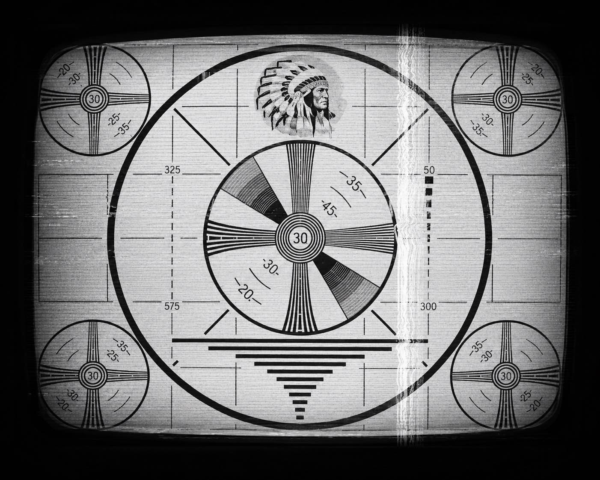

Curator's Statement
Academic Framework & Thesis Statement
In Tommy Orange's novel There There, being an urban Indian means dealing with displacement. Left without their ancestral land and surrounded by the concrete city of Oakland, Native Americans face the threat of losing their culture. However, the modern city offers an unexpected tool for survival: technology.
English 123 Final Project • Curator: Yifan Wang
Core Thesis
The central thesis of this exhibit is that technology is not where Native tradition ends; instead, it acts as a digital tool that allows urban Indians, like Orvil, Daniel, and Dene, to piece their fractured identities back together.
While curating this project, I realized that using digital tools to reclaim culture is highly complicated. By organizing these six artifacts, this exhibit shows the psychological journey of the urban Native community, moving from the history of media erasure to the desperate attempts at reconstruction, and finally into the dangerous reality of modern technology.
Gallery
